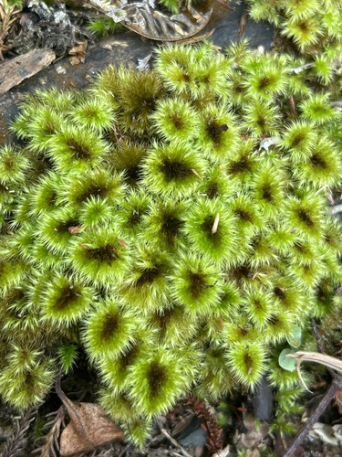

Hypnodendraceae
Umbrella Moss Family / Tree Moss Family
Hypnodendraceae is a distinctive family of relatively large mosses easily recognized by their unique dendroid (tree-like) growth form. An erect, trunk-like stipe arises from a creeping base and supports a terminal, umbrella-shaped or frond-like crown of branches (frond). Though functionally pleurocarpous (sporophytes lateral), their habit mimics miniature trees. They are primarily found in humid forests of the Southern Hemisphere and parts of Asia.
Overview
The Hypnodendraceae family contains about 3-4 genera and around 25 species, primarily distributed across Australasia, Malesia, southern South America, and parts of East Asia. These mosses are conspicuous elements of the bryoflora in humid, shaded forest environments, particularly rainforests and cloud forests. They typically grow on the forest floor (soil, humus), decaying logs, rocks, or tree bases, often preferring moist sites near streams or in gullies.
Their most striking feature is the dendroid habit, which is relatively uncommon among mosses. The erect stipe elevates the photosynthetic frond above the substrate, potentially aiding in light capture or spore dispersal in the shaded understory. The frond itself is composed of multiple branches, often pinnately arranged. The leaves on the stipe are reduced and scale-like, while the leaves on the frond branches are larger and photosynthetically active.
Sporophytes, when present, are borne laterally on the upper part of the stipe or at the base of the frond branches, often appearing clustered. They consist of long setae supporting inclined to horizontal, cylindrical capsules typical of many advanced pleurocarpous mosses. The family's phylogenetic placement is somewhat debated, often placed in its own order, Hypnodendrales.
Quick Facts
- Scientific Name: Hypnodendraceae
- Common Name: Umbrella Moss Family, Tree Moss Family
- Number of Genera: Approximately 3-4
- Number of Species: Approximately 25
- Distribution: Primarily Southern Hemisphere (Australasia, Malesia, S. America), also E. Asia.
- Habitat: Humid, shaded forests; on soil, humus, logs, rocks, tree bases.
- Evolutionary Group: Bryophytes - Mosses (Class: Bryopsida, Order: Hypnodendrales / uncertain)
Key Characteristics
Growth Form and Habit
Plants exhibit a highly characteristic dendroid (tree-like) growth form. A creeping primary stem (rhizome-like) gives rise to erect secondary stems (stipes) which bear a terminal, spreading, branched frond or crown. Functionally pleurocarpous but appears acrocarp-like. Medium-sized to large and robust.
Stems
Primary stems creeping. Stipes erect, stout, usually unbranched below the frond, often covered with rhizoids at the base. Stipes may bear small filamentous or scale-like paraphyllia. Frond branches spreading, often pinnately arranged.
Leaves
Leaves are dimorphic. Stipe leaves are small, scale-like, appressed, and often brownish. Frond leaves (on the branches of the crown) are much larger, crowded, typically ovate-lanceolate to lanceolate, often plicate (folded) or rugose (wrinkled), and usually spreading. Frond leaf apex is typically acute or acuminate. The costa is single and strong, usually ending near the apex or excurrent. Leaf margins are often strongly toothed. Leaf cells are generally small, isodiametric (quadrate) to shortly rectangular, typically thick-walled, and smooth or slightly papillose/prorate. Alar cells are usually not strongly differentiated.
Asexual Reproduction
Asexual reproduction is not common via specialized structures, but fragmentation of stems or fronds can occur.
Sporophytes (Reproductive Structures)
Sporophytes arise laterally, typically clustered on the upper part of the stipe or at the base of the frond branches. The capsule is elevated on a long, smooth seta. The capsule is generally cylindric, usually inclined to horizontal, and often curved. The capsule wall is smooth. The peristome is double (diplolepidous), well-developed, typically of the 'hypnoid' or 'bryoid' type. The operculum (lid) is usually conic to rostrate.
Habitat
Found in humid, shaded forests, especially rainforests and cloud forests. Grows on the forest floor (soil, humus), decaying logs, rocks (often near streams), and tree bases.
Field Identification
Identifying Hypnodendraceae is usually straightforward due to their unmistakable growth form.
Primary Identification Features
- Growth Habit (Key Feature): Distinctly dendroid (tree-like), with an erect stipe (trunk) supporting a branched frond (crown).
- Habitat: Humid, shaded forests, typically on the ground, logs, or rocks.
- Leaves: Dimorphic (small scale-like stipe leaves vs. larger frond leaves). Frond leaves often plicate/rugose with a single strong costa.
- Sporophytes (if present): Clustered near the base of the frond, capsules cylindric, inclined/horizontal on long setae.
Secondary Identification Features
- Size: Often relatively large and robust mosses.
- Branching: Frond branches often pinnately arranged.
Seasonal Identification Tips
- Year-round: The distinctive dendroid gametophytes are visible year-round.
- Sporophyte Timing: Sporophytes, when present, may mature at different times depending on the species and region, but are often found clustered below the frond.
Common Confusion Points
The dendroid habit strongly distinguishes Hypnodendraceae from most other mosses.
- Climaciaceae (Climacium): Also dendroid, but typically found in wetter, more open habitats (swamps, fens, wet meadows), has leaves with costa ending mid-leaf, different cell structure, and capsules are usually erect.
- Pterobryaceae / Meteoriaceae: Some species can be sub-dendroid or form pendent tufts, but lack the distinct stipe/frond structure of Hypnodendraceae and differ in leaf/capsule details.
- Other large pleurocarps (e.g., Hylocomiaceae, Thuidiaceae): Lack the distinct erect stipe and terminal frond structure, though may have complex branching.
The tree-like growth form with a distinct stipe and frond is the key identifier.
Field Guide Quick Reference
Look For:
- Dendroid (tree-like) growth form (Key!)
- Erect stipe (trunk)
- Terminal branched frond (crown)
- Habitat: Humid forests (ground, logs, rocks)
- Frond leaves often plicate/rugose, single costa
- Capsules clustered below frond, inclined/horizontal on long seta
Key Variations:
- Frond shape (umbrella vs. more flattened)
- Degree of leaf folding/wrinkling
- Stipe height and robustness
Notable Examples
The family is best known for the genus Hypnodendron:

Hypnodendron spp.
(Umbrella Mosses / Tree Mosses)
The largest genus, containing most of the family's species, distributed across Australasia, Malesia, and surrounding regions. Species vary in size and frond density but all share the characteristic dendroid habit with an erect stipe and branched crown. Common in rainforest understories.

Sciadocladus menziesii
(No standard common name)
Found in New Zealand and parts of Australia. Also exhibits a dendroid habit, often robust, growing on the forest floor or logs in wet forests. Differs from Hypnodendron in technical details like leaf cell structure.
Phylogeny and Classification
Hypnodendraceae belongs to the class Bryopsida. Its highly specialized dendroid growth form and combination of features have led to debates about its precise ordinal placement. It is most commonly placed in its own order, Hypnodendrales.
The relationships of Hypnodendrales to other major moss orders within the subclass Bryidae are not entirely resolved. Morphological similarities (e.g., peristome structure) have sometimes suggested links to Hypnales or Bryales. Other studies have suggested affinities with Ptychomniales. Molecular data generally supports Hypnodendrales as a distinct lineage, possibly related to Ptychomniales or representing an independent branch within Bryidae.
Position in Plant Phylogeny
- Kingdom: Plantae
- Division: Bryophyta (Mosses)
- Class: Bryopsida
- Subclass: Bryidae
- Order: Hypnodendrales (often recognized) / or near Ptychomniales/Hypnales
- Family: Hypnodendraceae
Evolutionary Significance
Hypnodendraceae is evolutionarily significant for:
- Dendroid Growth Form: Represents a remarkable example of complex, tree-like architecture evolving within mosses, likely an adaptation for light capture or spore dispersal in shaded forest environments.
- Specialized Habit: Shows specialization for humid forest floor ecosystems, particularly in the Southern Hemisphere.
- Dimorphic Leaves: The differentiation between scale-like stipe leaves and larger frond leaves illustrates functional specialization within the plant body.
- Phylogenetic Position: Its status as a distinct lineage, potentially within its own order, contributes to understanding the major branching patterns within the Bryidae subclass.